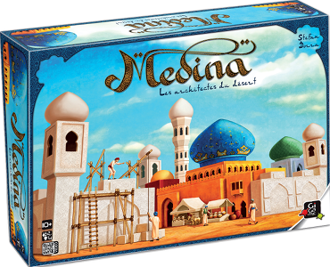
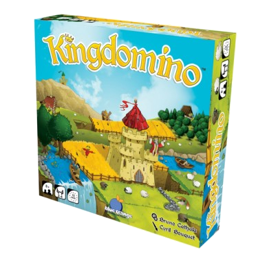

Medina

Caractéristiques
| Année |
Nb. joueurs |
Durée |
| 2001 |
3-4 |
60 min |
Description
Médina est un jeu de stratégie aux règles simples et tours de jeu rapide où tout est question d’opportunité et de prise de risque.
Architectes du désert.
Nous sommes en 1822, après des années de déclin la Médina située au pied de l’Atlas va être reconstruite pour relancer son influence.
Les joueurs vont participer ensemble à cette reconstruction en bâtissant les plus beaux et les plus grands palais.
Au fur et à mesure de la partie, la ville renait en 3 dimensions sous leurs yeux.
A chaque tour, les joueurs vont placer des éléments dans la ville, les palais grandissent et prennent de la valeur.
Chacun pourra en acquérir 4 au cours de la partie mais attention une fois qu’un palais appartient à un joueur il ne peut plus être agrandi.
Il s’agit donc de choisir le bon moment pour se positionner, d’autant que la place va se faire de plus en plus rare dans la ville.
Kingdomino

Caractéristiques
| Année |
Nb. joueurs |
Durée |
| 2016 |
2-4 |
15 min |
Description
Vous incarnez un Seigneur en quête de terres pour étendre son Royaume.hamps de blé, lacs, montagnes... il vous faut tout explorer pour repérer les meilleures parcelles.
Mais d’autres Seigneurs convoitent les mêmes terres que vous...